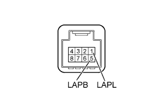
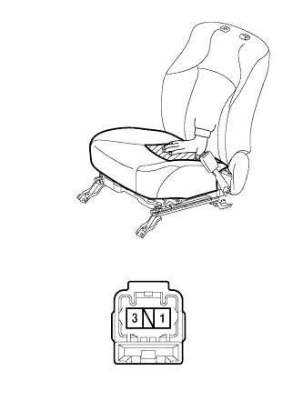
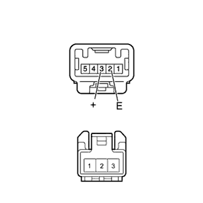

СИСТЕМА ПРЕДУПРЕЖДЕНИЯ О НЕПРИСТЕГНУТОМ РЕМНЕ БЕЗОПАСНОСТИ > Контрольная лампа предупреждения о непристегнутом ремне безопасности переднего пассажира не работает |
| 1.СНИМИТЕ ПОКАЗАНИЯ ПОРТАТИВНОГО ДИАГНОСТИЧЕСКОГО ПРИБОРА |
Проверьте в режиме "Data List" работу выключателя пряжки ремня безопасности переднего пассажира (Нажмите здесь).
| Информация на дисплее прибора | Измеряемая величина / диапазон измерения | Нормальное состояние | Замечание по диагностике |
| P-Seatbelt Buckle SW | Сигнал выключателя пряжки ремня безопасности переднего пассажира / ON (ВКЛ) или OFF (ВЫКЛ) | ON (ВКЛ): Ззастегнутый ремень безопасности переднего пассажира OFF (ВЫКЛ): Незастегнутый ремень безопасности переднего пассажира | - |
|
| ||||
| OK | |
| 2.ВЫПОЛНИТЕ АКТИВНУЮ ДИАГНОСТИКУ С ПОМОЩЬЮ ПОРТАТИВНОГО ДИАГНОСТИЧЕСКОГО ПРИБОРА (ДЛЯ КОНТРОЛЬНОЙ ЛАМПЫ РЕМНЯ БЕЗОПАСНОСТИ СО СТОРОНЫ ПЕРЕДНЕГО ПАССАЖИРА) |
Действуя в соответствии с указаниями на дисплее портативного диагностического прибора, выберите режим Active Test (Нажмите здесь).
| Параметр / Устройство | Испытываемое устройство | Диапазон регулирования | Замечание по диагностике |
| Front passenger side seat belt (ремень безопасности переднего пассажира) | Контрольная лампа ремня безопасности переднего пассажира | ON (ВКЛ) / OFF (ВЫКЛ) | Убедитесь, что автомобиль остановлен, и двигатель работает на холостом ходу. |
| Результат | Следующий шаг |
| Состояние контрольной лампы ремня безопасности переднего пассажира невозможно переключить в режиме "Active Test" | А |
| Состояние контрольной лампы ремня безопасности переднего пассажира можно переключить в режиме "Active Test" | B |
|
| ||||
| А | |
| 3.ПРОВЕРЬТЕ СИГНАЛЬНУЮ ЛАМПУ В СБОРЕ |
|  |
Снимите сигнальную лампу (Нажмите здесь).
Подайте напряжение аккумуляторной батареи на сигнальную лампу.
Убедитесь, что контрольная лампа ремня безопасности переднего пассажира горит.
| Условия измерений | Заданные условия |
| Положительный (+) вывод аккумуляторной батареи → контакт 5 (LAPB) Отрицательный (-) вывод аккумуляторной батареи → контакт 1 (LAPL) | Контрольная лампа ремня безопасности переднего пассажира горит |
|
| ||||
| OK | |
| 4.ПРОВЕРЬТЕ ЖГУТ ПРОВОДОВ И РАЗЪЕМ (ЩИТОК ПРИБОРОВ - СИГНАЛЬНАЯ ЛАМПА, АККУМУЛЯТОРНАЯ БАТАРЕЯ И МАССА) |
Отсоедините разъем G6 щитка приборов.
Отсоедините разъем G5 сигнальной лампы.
Измерьте сопротивление и напряжение в соответствии со значениями, приведенными в таблице.
| Контакты для подключения диагностического прибора | Условие | Заданные условия |
| G6-17 (WRNP) - G5-1 (LAPL) | Всегда | Менее 1 Ом |
| G6-17 (WRNP) - масса | Всегда | 10 кОм или более |
| Контакты для подключения диагностического прибора | Положение переключателя | Заданные условия |
| G5-5 (LAPB) - масса | Замок зажигания в положении ON (ВКЛ) | 11–14 В |
|
| ||||
| OK | ||
| ||
| 5.ПРОВЕРЬТЕ ПОДУШКУ РАЗДЕЛЬНОГО ПЕРЕДНЕГО СИДЕНЬЯ (ДАТЧИК ПРИСУТСТВИЯ ПАССАЖИРА) |
|  |
Снимите переднее сиденье в сборе (Нажмите здесь).
Измерьте сопротивление в соответствии со значениями, приведенными в таблице ниже.
| Контакты для подключения диагностического прибора | Условие | Заданные условия |
| 1 - 3 | К датчику присутствия пассажира приложено усилие 147 Н (15 кгс, 33,0 фунт-силы) | Менее 100 Ом |
|
| ||||
| OK | |
| 6.ПРОВЕРЬТЕ ЗАМОК РЕМНЯ БЕЗОПАСНОСТИ ПЕРЕДНЕГО СИДЕНЬЯ В СБОРЕ |
|  |
Снимите замок ремня безопасности правого*1 или левого*2 переднего сиденья в сборе (Нажмите здесь).
Измерьте сопротивление в соответствии со значениями, приведенными в таблице ниже.
| Контакты для подключения диагностического прибора | Условие | Заданные условия |
| 2 (E) - 3 | Всегда | Менее 1 Ом |
| 3 (+) - 1 | Незастегнутый ремень безопасности переднего пассажира | |
| 3 (+) - 1 | Застегнутый ремень безопасности переднего пассажира | 10 кОм или более |
|
| ||||
| OK | |
| 7.ПРОВЕРЬТЕ ЖГУТ ПРОВОДОВ И РАЗЪЕМ (ЩИТОК ПРИБОРОВ - ЗАМОК РЕМНЯ БЕЗОПАСНОСТИ СИДЕНЬЯ ПЕРЕДНЕГО ПАССАЖИРА И МАССА) |
Отсоедините разъем G7 щитка приборов.
Отсоедините разъем Q21*1 или R34*2 замка ремня безопасности.
Измерьте сопротивление в соответствии со значениями, приведенными в таблице ниже.
| Контакты для подключения диагностического прибора | Условие | Заданные условия |
| G7-15 (P/SB) - Q21-3 (+) | Всегда | Менее 1 Ом |
| Q21-2 (E) - масса | ||
| G7-15 (P/SB) - масса | Всегда | 10 кОм или более |
| Контакты для подключения диагностического прибора | Условие | Заданные условия |
| G7-15 (P/SB) - R34-3 (+) | Всегда | Менее 1 Ом |
| R34-2 (E) - масса | ||
| G7-15 (P/SB) - масса | Всегда | 10 кОм или более |
|
| ||||
| OK | ||
| ||